Learning Objectives
After completing this unit, you’ll be able to:
- Describe how FME Server can automate repetitive tasks.
- Design a workspace with user parameters to give the end-user control over how a workspace runs.
- Set user parameters.
Resources
Video
Automate Repetitive Data Integration Tasks with FME Server
Frank is a GIS Administrator working with Jennifer for a local government. He is also the FME Server Administrator for his organization. Because his town doesn't have an open data portal, he is constantly bombarded with emails from other departments and the public asking for GIS data. He has to read through the emails, find out what layer people are requesting, and manually send it to them. People most often request layers from the community resources geodatabase, which contains data about street food vendors, parks, community centers, etc.
His colleague Jennifer offers to help him use FME Server to let users access the data directly without his help, creating self-serve data delivery.
Give Users Control Using Published Parameters
Jennifer sends Frank a workspace to help him get started. He downloads and opens it with FME Workbench.
It’s a simple workspace that reads in all the feature classes of an Esri geodatabase and then writes them out to the format of a user’s choice.
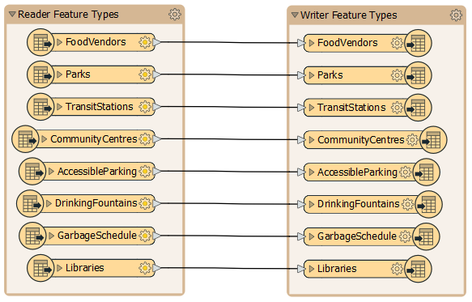
Jennifer tells him he can create a workspace that gives end-users control over what data they get. She suggests two steps to let users customize the data they receive:
- Let them choose the format
- Let them choose the layers
The first step is to let users specify which data format they want by providing them a fixed selection of format choices. Since the workspace uses a Generic writer, users are currently able to choose any format. This unlimited choice can lead to problems:
- Users may become overwhelmed with options .
- Users may choose a nonsensical format, e.g. trying to write text data to an image/raster format like JPEG, which can create errors that cause the workspace to fail.
Jennifer tells Frank he can create user parameters to address this issue. User parameters give users control over how a workspace runs. You can use published parameters when running workspaces locally, but it is critical to use them when creating workspaces for FME Server, which are likely to be run by other people.
To restrict the formats available for writing, Frank finds the Training [GENERIC] writer in the Navigator. He clicks the drop-down arrow and expands the Parameters section.
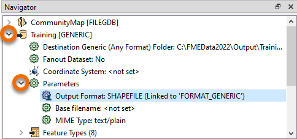
He double-clicks the Output Format parameter and sees it’s currently assigned to “Esri Shapefile”.
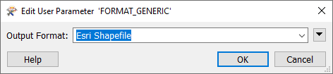
Back in the Navigator window, Frank sees that the output format is linked to a user parameter because it has a different icon and says “(Linked to ‘FORMAT_GENERIC’)”. Most parameters in a workspace – reader, writer, and transformer – can be linked to published parameters to let users set their value when they run the workspace.
Frank wants to see how the parameter works, so he clicks the Run menu and ensures Prompt for User Parameters is checked, and then clicks Run.
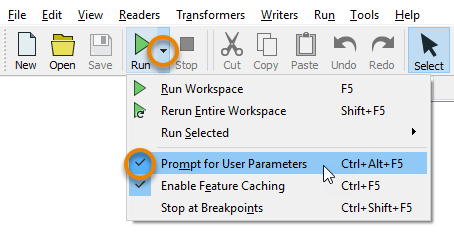
The Translation Parameter Values dialog pops up and asks the user to select a value for Output Format, defaulting to “Esri Shapefile”. Frank clicks the drop-down menu for Output Format and sees he can pick any format supported by FME. That's too many options.
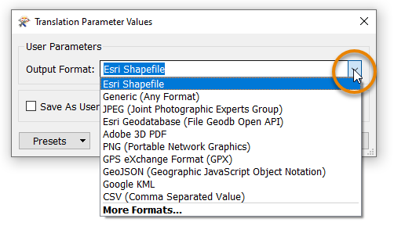
To fix this problem, Frank closes the dialog and looks at the User Parameters section of the Navigator. He finds the “[FORMAT_GENERIC]” published parameter. He will replace this to restrict the user’s options. He right-clicks it and selects Delete.
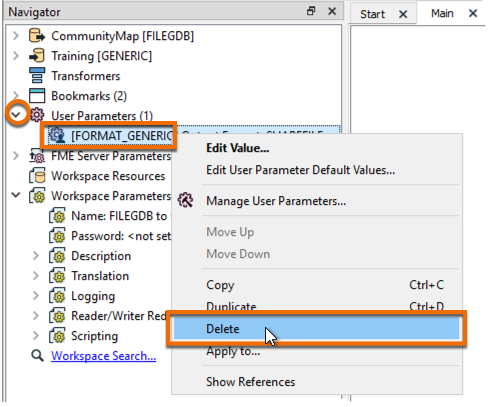
Then he right-clicks User Parameters and clicks Manage User Parameters...
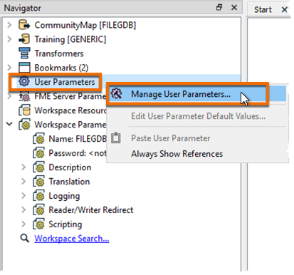
The Parameter Manager dialog opens. There are many types of user parameters available. In this case, Frank chooses Choice, which lets him provide a list of options to the user that map onto a different value provided to the workspace. This user parameter is useful for letting users choose formats or coordinate systems because it hides the more complex name FME needs and instead shows a simple version to the user.
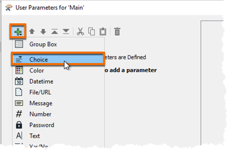
On the right-hand side Frank fills out the dialog with the following parameter properties:
Parameter Identifier
|
OutputFormat
|
Prompt
|
Enter an output format
|
Published
|
Enabled
|
Required
|
Disabled
|
Disable Attribute Assignment
|
Enabled
|
Choice Configuration
|
Drop-down
|
To fill in the Choices table, Frank wants to import the file formats the user can choose from. He clicks Import > Writer Formats.
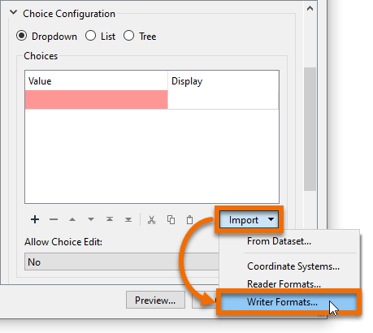
In the Select Writer Formats dialog, use the Search bar to search for the following formats. Click the check to add them to the list.
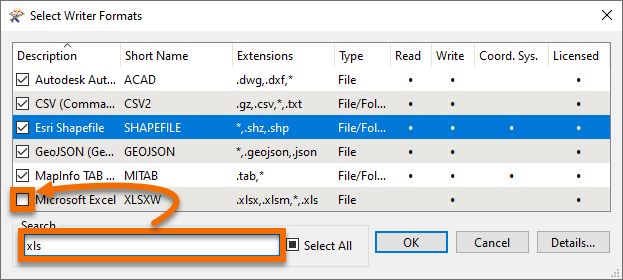
Click OK.
The selected formats appear in the Choices table:
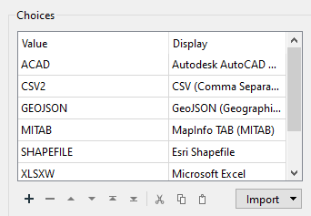
Frank uses a table here because he wants to show the user a more readable name for the format (Description) instead of the value that FME needs to choose the format (Short Name).
Finally, Frank selects Esri Shapefile as the default value.
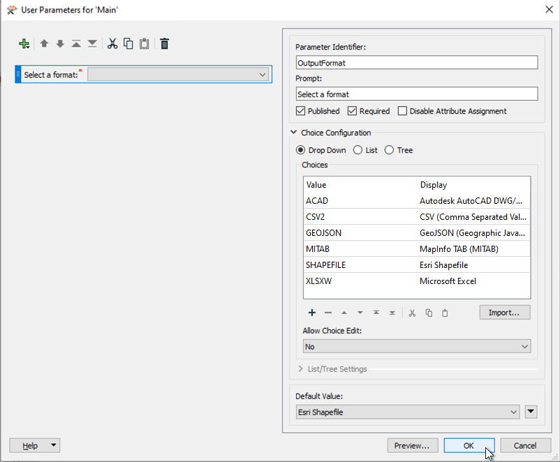
He clicks OK to create the published parameter.
Now that he has created a published parameter, he needs to link it to the correct writer parameter for it to work. He goes back to the writer’s Output Format parameter, right-clicks it, and clicks Link to User Parameter.

In the Set to User Parameter dialog, he picks OutputFormat from the list and clicks OK.
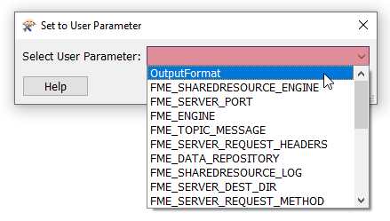
Now when he clicks Run, he is prompted to choose an output format from the restricted list. The workspace runs and he receives the data in the format he chose.

Exercise
Frank is happy with the format selection, but now he’d like to let the user pick the layers from the geodatabase they receive. He knows he can control this with the user parameter Feature Types to Read, found in the Navigator under CommunityMap [FILEGDB] reader > Parameters > Features to Read.
For the exercise, create a new published parameter that lets the user pick which feature types to read and write. Hint: in some cases, creating a published parameter is as easy as right-clicking the parameter you want to link and selecting Create User Parameter.